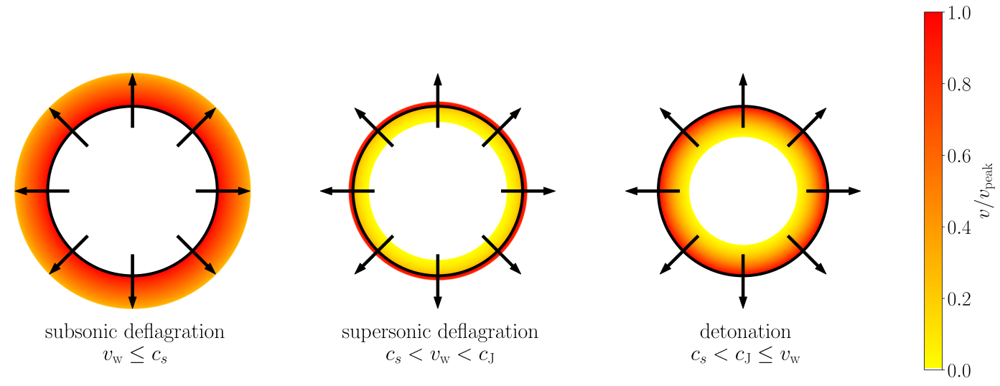
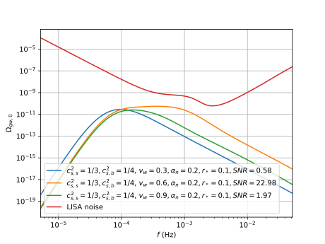

Generating gravitational wave spectra from equations of state for phase transitions in the early universe
Mika Mäki, Doctoral Researcher,
Computational Field Theory group, University of Helsinki
21.3.2025
Phase transitions in the early universe

- First-order: potential barrier
⇒ phase boundary ⇒ bubble nucleation - SM Higgs: crossover, BSM Higgs: first-order
⇒ Experimental testing of BSM theories
Fluid movement ⇒ sound waves ⇒ gravitational waves
Self-similar hydrodynamics
- Self-similar: time-independent solution
- Black circle: phase boundary, aka. bubble wall
- Colour: velocity of moving plasma
- $c_s$: speed of sound
- $v_\text{w}$: wall speed
- $c_\text{J}$: Chapman-Jouguet speed
PTtools: GW spectra from equations of state
- Python-based simulation framework
- Based on the Sound Shell Model by Hindmarsh et al.
- Computationally efficient compared to lattice simulations
- Simulation of a single expanding self-similar spherically symmetric bubble
⇒ GW power spectrum -
Key parameters from particle physics: $v_\text{wall}, \alpha_n, r_*, T_n,$
equation of state: $p(T,\phi)$
General equation of state
- General equation of state: $p(T,\phi) = \frac{\pi^2}{90} g_p(T) T^4 - V(T,\phi)$
- Sound speed $c_s \equiv \frac{dp}{de} \neq \frac{1}{\sqrt{3}}$
PTtools
- Python-based simulation framework
- Based on the Sound Shell Model
- Single bubble
PTtools repository
From fluid profiles to GW spectra

🠮

Fluid shell velocity profiles
- Boundary conditions
- ODE integration
GW spectra
- Sine transform
- Conversion to observable $f$ etc.
- Experimentally testable by LISA
Detection of primordial gravitational waves
- LISA: Laser Interferometer Space Antenna
- Will be launched in the 2030s
- Three satellites connected by 2.5 million kilometer long laser beams
- Measures gravitational waves at milli-Hertz frequencies
- "Listening to the sound of a cosmic kettle"
- Direct testing and comparison of particle physics theories beyond the Standard Model
Thank you!
Fluid velocity spectra